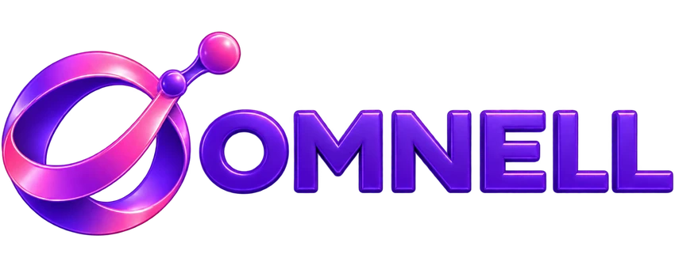

CV · Expert Data & Intelligence Artificielle
Python, SQL, Machine Learning, projets IA, traitement de données et déploiement de solutions.
Télécharger le CV technique
PARLONS DE VOTRE PROJETEt si vos équipes récupéraient du temps pour vendre, décider et créer de la valeur ? Je transforme vos données et vos processus en solutions d'IA, d'automatisation et de pilotage adaptées à vos priorités.
Je suis ESMEL AMARY Jean-Yves, ingénieur concepteur logiciel, consultant indépendant et fondateur d'OMNELL. Mon approche commence par une question : quel résultat concret voulez-vous améliorer ?
* Résultat d'optimisation sur un traitement de données spécifique, indiqué dans mon CV technique ; ce résultat n'est pas une promesse généralisable.
Un projet Data ou IA à concrétiser ? Des collaborateurs à rendre plus autonomes ? Découvrez les expériences pertinentes en un clic.
Python, SQL, Machine Learning, projets IA, traitement de données et déploiement de solutions.
Télécharger le CV techniqueMicrosoft 365 Copilot, agents IA, Excel, Power BI et formations pratiques pour les métiers.
Télécharger le CV formateurAgents IA, Copilot, RAG et automatisations ciblées pour limiter les tâches répétitives et accélérer le travail.
Python, SQL et Power BI : vos indicateurs au bon endroit pour voir les écarts et agir plus rapidement.
Formations orientées livrables, cas pratiques et autonomie immédiate sur les outils numériques et l’IA.
Optimisation de traitements de données par SQL / Python, avec une réduction du temps de traitement déclarée dans mon parcours. Le gain : des données disponibles plus vite.
Formation d'une cohorte de cadres et secrétaires de direction aux usages avancés de Word, Excel, PowerPoint et de l'IA. Le bénéfice visé : plus d'autonomie dans la production quotidienne.
Création d'agents IA, maîtrise des instructions système, assistance aux tâches d'une direction et recherche approfondie. Des compétences mises en pratique sur les situations du métier.
Moins d'heures perdues dans les reportings, meilleure lecture des ventes et des coûts, prises de décision plus rapides, équipes concentrées sur le client.
Exemple hypothétique : 2 ventes supplémentaires dans le mois à 150 000 FCFA représenteraient 300 000 FCFA de chiffre d'affaires additionnel, avant les coûts. L'effet réel d'une solution dépend du contexte.
Gagnez du temps sur les documents et tableaux, développez votre autonomie avec Copilot et Power BI, présentez vos résultats avec confiance et consacrez-vous aux missions plus utiles.
Exemple hypothétique : 2 heures récupérées par semaine et par personne = 8 heures par mois sur une base de 4 semaines.
Essayez un scénario simple : nombre de collaborateurs × heures gagnées × valeur horaire. Modifiez les hypothèses pour voir le potentiel théorique.
Attention : ceci est un exemple hypothétique, pas une garantie de gain, de chiffre d'affaires ou de retour sur investissement. Calcul : 4 semaines par mois et 52 semaines par an. Le temps économisé ne devient pas automatiquement du revenu ; il doit être réellement redéployé ou transformé en économie.
Évaluer mon cas concretDe la production de données à l’adoption de l’IA par les équipes, j’ai travaillé sur des problématiques techniques et opérationnelles réelles. Ces organisations sont citées au titre de mes expériences et interventions, sans implication d’un partenariat commercial actuel.
Partagez-moi votre défi : une tâche trop longue, un reporting qui arrive tard, une équipe à former ou un projet IA à déployer. Nous identifierons ensemble un premier résultat utile à mesurer.